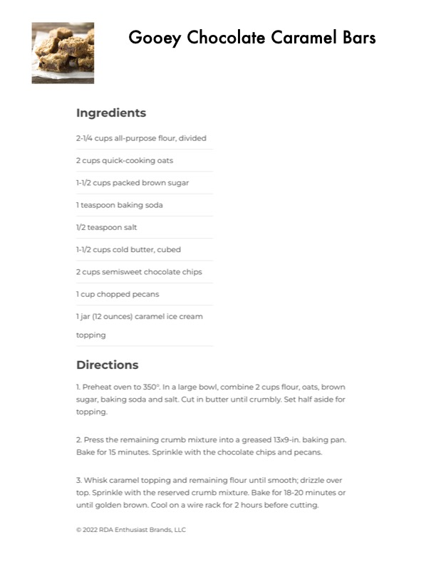

Gooey Chocolate Caramel Bars

Original cookbook page 400
Rich chocolate caramel bars with oats, pecans, and a crumbly topping. Perfect for dessert or special occasions.
Prep: 15 minutes • Cook: 35 minutes • Total: 50 minutes plus 2 hours cooling
Ingredients
- 2-1/4 cups all-purpose flour, divided
- 2 cups quick-cooking oats
- 1-1/2 cups packed brown sugar
- 1 teaspoon baking soda
- 1/2 teaspoon salt
- 1-1/2 cups cold butter, cubed
- 2 cups semisweet chocolate chips
- 1 cup chopped pecans
- 1 jar (12 ounces) caramel ice cream topping
Instructions
- Preheat oven to 350°. In a large bowl, combine 2 cups flour, oats, brown sugar, baking soda and salt. Cut in butter until crumbly. Set half aside for topping.
- Press the remaining crumb mixture into a greased 13x9-in. baking pan. Bake for 15 minutes. Sprinkle with the chocolate chips and pecans.
- Whisk caramel topping and remaining flour until smooth; drizzle over top. Sprinkle with the reserved crumb mixture. Bake for 18-20 minutes or until golden brown. Cool on a wire rack for 2 hours before cutting.
Recipe #400 from collection